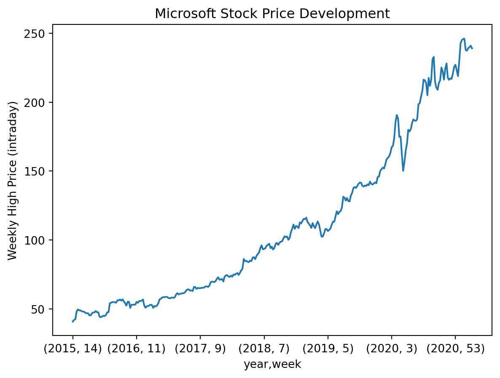

penguins = pd.read_csv(filepath_or_buffer = '01-daten/penguins.csv')33 Reading and Writing Files
Pandas provides a set of functions to read and write files that follow a consistent naming convention. Functions for reading files are called as pd.read_csv(), and functions for writing files are called as pd.to_csv(). Pandas can also read files from the internet using pd.read_csv(URL).
| Format Type | Data Description | Reader | Writer |
|---|---|---|---|
| text | CSV | read_csv | to_csv |
| text | Fixed-Width Text File | read_fwf | NA |
| text | JSON | read_json | to_json |
| text | HTML | read_html | to_html |
| text | LaTeX | Styler.to_latex | NA |
| text | XML | read_xml | to_xml |
| text | Local clipboard | read_clipboard | to_clipboard |
| binary | MS Excel | read_excel | to_excel |
| binary | OpenDocument | read_excel | NA |
| binary | HDF5 Format | read_hdf | to_hdf |
| binary | Feather Format | read_feather | to_feather |
| binary | Parquet Format | read_parquet | to_parquet |
| binary | ORC Format | read_orc | to_orc |
| binary | Stata | read_stata | to_stata |
| binary | SAS | read_sas | NA |
| binary | SPSS | read_spss | NA |
| binary | Python Pickle Format | read_pickle | to_pickle |
| SQL | SQL | read_sql | to_sql |
The following demonstrates reading the palmerpenguins dataset using Pandas.
palmerpenguins

“Meet the Palmer Penguins” by @allison_horst is licensed under CC0-1.0 and is available on GitHub. 2020
The dataset is licensed under CC0 and is available in R as well as on GitHub. 2020
# R commands to load the dataset
install.packages("palmerpenguins")
library(palmerpenguins)Horst AM, Hill AP, and Gorman KB. 2020. palmerpenguins: Palmer Archipelago (Antarctica) penguin data. R package version 0.1.0. https://allisonhorst.github.io/palmerpenguins/. doi: 10.5281/zenodo.3960218.
File-reading functions expect a path, which can be provided either positionally or as a keyword argument. The keyword depends on the file type; for a comma-separated CSV file, it is filepath_or_buffer.
A quick look at the data using the penguins.head() method:
print(penguins.head()) species island bill_length_mm bill_depth_mm flipper_length_mm \
0 Adelie Torgersen 39.1 18.7 181.0
1 Adelie Torgersen 39.5 17.4 186.0
2 Adelie Torgersen 40.3 18.0 195.0
3 Adelie Torgersen NaN NaN NaN
4 Adelie Torgersen 36.7 19.3 193.0
body_mass_g sex year
0 3750.0 male 2007
1 3800.0 female 2007
2 3250.0 female 2007
3 NaN NaN 2007
4 3450.0 female 2007 
“Bill dimensions” by @allison_horst is licensed under CC0-1.0 and is available on GitHub. 2020
An overview of the dataset can be obtained using the DataFrame.info() method.
print(penguins.info())<class 'pandas.core.frame.DataFrame'>
RangeIndex: 344 entries, 0 to 343
Data columns (total 8 columns):
# Column Non-Null Count Dtype
--- ------ -------------- -----
0 species 344 non-null object
1 island 344 non-null object
2 bill_length_mm 342 non-null float64
3 bill_depth_mm 342 non-null float64
4 flipper_length_mm 342 non-null float64
5 body_mass_g 342 non-null float64
6 sex 333 non-null object
7 year 344 non-null int64
dtypes: float64(4), int64(1), object(3)
memory usage: 21.6+ KB
NoneSome data types were not automatically recognized. The affected columns were assigned the generic type object. You can specify the data type when reading a file using the dtype argument. For multiple columns, this can be done with a dictionary in the form {'column_name': 'dtype'}. Using the DataFrame.astype() method, this can also be done afterwards.
penguins = pd.read_csv(filepath_or_buffer = '01-daten/penguins.csv', dtype = {'species': 'category', 'island': 'category', 'sex': 'category'})
# Afterwards
# penguins = penguins.astype({'species': 'category', 'island': 'category', 'sex': 'category'})
print(penguins.info())<class 'pandas.core.frame.DataFrame'>
RangeIndex: 344 entries, 0 to 343
Data columns (total 8 columns):
# Column Non-Null Count Dtype
--- ------ -------------- -----
0 species 344 non-null category
1 island 344 non-null category
2 bill_length_mm 342 non-null float64
3 bill_depth_mm 342 non-null float64
4 flipper_length_mm 342 non-null float64
5 body_mass_g 342 non-null float64
6 sex 333 non-null category
7 year 344 non-null int64
dtypes: category(3), float64(4), int64(1)
memory usage: 15.0 KB
NoneSome columns contain invalid values. Penguins with incomplete data should be removed from the dataset.
- Use
DataFrame.apply(pd.isna)to identify missing values. - Use
DataFrame.any(axis=1)to aggregate row-wise.anyreturns True if at least one element is True. - Use
sum()to count the number of rows with missing values. - Use
np.where()to get their index positions. - Use
DataFrame.drop()to remove the corresponding rows.
# Identify missing values
print(penguins.apply(pd.isna).head(), "\n")
# Aggregate row-wise
print(penguins.apply(pd.isna).any(axis = 1).head(), "\n")
# Count rows with missing values
print(f"{penguins.apply(pd.isna).any(axis = 1).sum()} penguins have incomplete values.\n")
# Get index positions
print(np.where(penguins.apply(pd.isna).any(axis = 1))[0])
# Remove rows
penguins.drop(np.where(penguins.apply(pd.isna).any(axis = 1))[0], inplace = True) species island bill_length_mm bill_depth_mm flipper_length_mm \
0 False False False False False
1 False False False False False
2 False False False False False
3 False False True True True
4 False False False False False
body_mass_g sex year
0 False False False
1 False False False
2 False False False
3 True True False
4 False False False
0 False
1 False
2 False
3 True
4 False
dtype: bool
11 penguins have incomplete values.
[ 3 8 9 10 11 47 178 218 256 268 271]Check the cleaned dataset:
print(penguins.info())<class 'pandas.core.frame.DataFrame'>
Index: 333 entries, 0 to 343
Data columns (total 8 columns):
# Column Non-Null Count Dtype
--- ------ -------------- -----
0 species 333 non-null category
1 island 333 non-null category
2 bill_length_mm 333 non-null float64
3 bill_depth_mm 333 non-null float64
4 flipper_length_mm 333 non-null float64
5 body_mass_g 333 non-null float64
6 sex 333 non-null category
7 year 333 non-null int64
dtypes: category(3), float64(4), int64(1)
memory usage: 17.0 KB
None33.1 Reading Time Series
With Pandas, reading time series data is straightforward. String parsing allows any string to be interpreted as a datetime.
If the internal structure of a file is known, the necessary parameters can be passed directly when reading, for example with pd.read_csv(). The parameters parse_dates and date_format are used for this.
parse_dates specifies where the datetime information is located. Different arguments can be passed:
parse_dates = Trueinterprets the index as datetime.- A list of integers or column labels interprets these columns individually as datetime, e.g.,
parse_dates = [1, 2, 3]. - A list of lists combines the specified columns into a single datetime column, e.g.,
parse_dates = [[1, 2, 3]]. The column values are concatenated with a space and then parsed.
Pandas interprets strings according to ISO 8601 as a representation of a date in the order year, month, day, hour, minute, second, millisecond in the format YYYY-MM-DD 12:00:00.000. The separator between date and time can be a space or the letter T. The data type and the smallest unit are stored in the dtype attribute.
Other formats can be specified with the date_format parameter. Using the strftime documentation, a non-ISO8601 format can be passed.
Datetime information can also be declared afterwards using pd.to_datetime(arg, format="..."). The arg parameter specifies the column to convert. The format parameter works like date_format to specify a non-ISO8601 format.
Time series data for Microsoft stock is stored at ‘01-daten/Microsoft_Stock.csv’.
Microsoft Stock - Time Series Analysis by Vijay V Venkitesh is licensed under CC0 and is available on Kaggle. 2021
stock = pd.read_csv(filepath_or_buffer = '01-daten/Microsoft_Stock.csv')
print(stock.head(), "\n")
print(stock.info()) Date Open High Low Close Volume
0 4/1/2015 16:00:00 40.60 40.76 40.31 40.72 36865322
1 4/2/2015 16:00:00 40.66 40.74 40.12 40.29 37487476
2 4/6/2015 16:00:00 40.34 41.78 40.18 41.55 39223692
3 4/7/2015 16:00:00 41.61 41.91 41.31 41.53 28809375
4 4/8/2015 16:00:00 41.48 41.69 41.04 41.42 24753438
<class 'pandas.core.frame.DataFrame'>
RangeIndex: 1511 entries, 0 to 1510
Data columns (total 6 columns):
# Column Non-Null Count Dtype
--- ------ -------------- -----
0 Date 1511 non-null object
1 Open 1511 non-null float64
2 High 1511 non-null float64
3 Low 1511 non-null float64
4 Close 1511 non-null float64
5 Volume 1511 non-null int64
dtypes: float64(4), int64(1), object(1)
memory usage: 71.0+ KB
NoneThe Date column contains date and time information in the format ‘Month/Day/Year Hour:Minute:Second’, which Pandas did not automatically recognize. Therefore, the column has the data type object.
33.2 Time Series Reading Exercises
Pass the required arguments to
pd.read_csv()to correctly read theDatecolumn as datetime.Calculate the weekly high prices (intraday).
Tip 33.1: Solution for Reading Time Series
- Task
stock = pd.read_csv(filepath_or_buffer = '01-daten/Microsoft_Stock.csv',
parse_dates = ['Date'], # alternatively: [0]
date_format = '%m/%d/%Y %H:%M:%S')
print(stock.head(), "\n")
print(stock.info()) Date Open High Low Close Volume
0 2015-04-01 16:00:00 40.60 40.76 40.31 40.72 36865322
1 2015-04-02 16:00:00 40.66 40.74 40.12 40.29 37487476
2 2015-04-06 16:00:00 40.34 41.78 40.18 41.55 39223692
3 2015-04-07 16:00:00 41.61 41.91 41.31 41.53 28809375
4 2015-04-08 16:00:00 41.48 41.69 41.04 41.42 24753438
<class 'pandas.core.frame.DataFrame'>
RangeIndex: 1511 entries, 0 to 1510
Data columns (total 6 columns):
# Column Non-Null Count Dtype
--- ------ -------------- -----
0 Date 1511 non-null datetime64[ns]
1 Open 1511 non-null float64
2 High 1511 non-null float64
3 Low 1511 non-null float64
4 Close 1511 non-null float64
5 Volume 1511 non-null int64
dtypes: datetime64[ns](1), float64(4), int64(1)
memory usage: 71.0 KB
None- Task
The Pandas method Series.dt.weekofyear() is no longer supported (see documentation). It has been replaced by Series.dt.isocalendar().week.
# Extract year and week
print(stock['Date'].dt.isocalendar().week.head(), "\n")
print(stock['Date'].dt.isocalendar().year.tail())
# Insert year and week into the DataFrame
stock.insert(loc = 1, column = 'week', value = stock['Date'].dt.isocalendar().week)
stock.insert(loc = 1, column = 'year', value = stock['Date'].dt.isocalendar().year)
# Determine weekly maximum using groupby
print(stock.groupby(by = ['year', 'week'])['High'].max())
# Plot the weekly high prices
stock.groupby(by = ['year', 'week'])['High'].max().plot(
ylabel = 'Weekly High Price (intraday)',
title = 'Microsoft Stock Price Development'
)0 14
1 14
2 15
3 15
4 15
Name: week, dtype: UInt32
1506 2021
1507 2021
1508 2021
1509 2021
1510 2021
Name: year, dtype: UInt32
year week
2015 14 40.76
15 41.95
16 42.46
17 48.14
18 49.54
...
2021 9 237.47
10 239.17
11 240.06
12 241.05
13 239.10
Name: High, Length: 314, dtype: float64
33.3 Reading Complex Files
Reading files is not always straightforward. Tools and strategies for handling difficult cases can be found in the Structured Dataset Reading Guide. This guide also provides a detailed discussion on handling missing values.